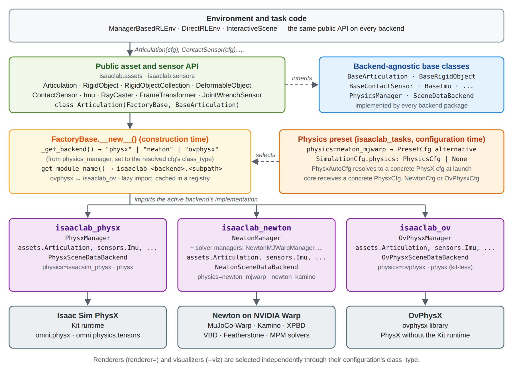
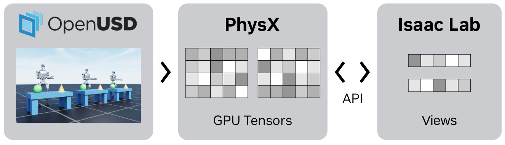
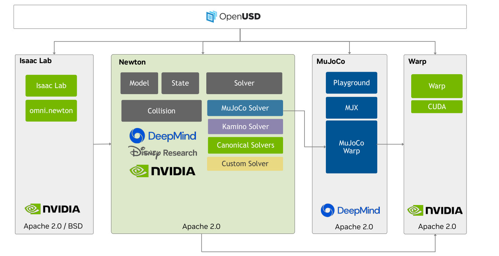
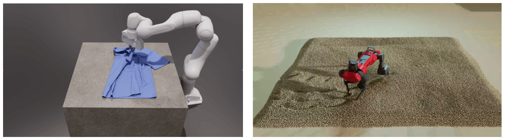
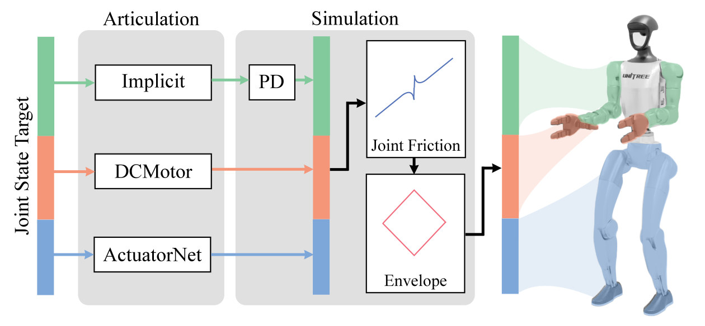
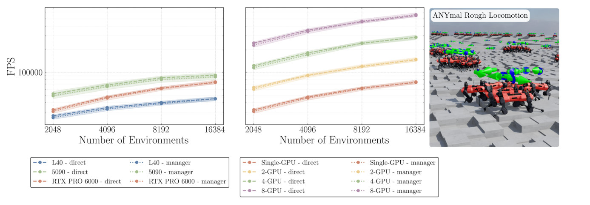

Sim-robot-learning · 归档于 2026-10-23
IsaacLab3
Isaac Lab 3.0（v3.0.0 GA release）· 论文：Isaac Lab: A GPU-Accelerated Simulation Framework for Multi-Modal Robot Learning
归档到 Robot learning in simulation：GPU 并行的机器人学习仿真框架，正是本项目的 simulators / physics-rendering frameworks；也和 Robotic-harness 相关（自带给 coding agent 的 skills 和统一 CLI）。
来源标记：3.0 新 = release notes 和 v3.0.0 文档；2.x 论文 = arXiv 2511.04831，3.0 仍沿用。流程图里绿框 = 3.0 新增。
TL;DR
- Problem
- 2.x 的 task 绑死在 Isaac Sim + PhysX 上：换 Newton 要改 task 代码，最小的实验也得装整套 Isaac Sim。
- Idea
- 3.0 在 task 和引擎之间加一层：backend-neutral 的 asset / sensor API，
physics=preset 选引擎，factory 在构造时派发到 PhysX / Newton / OvPhysX；Isaac Sim 变成可选 extra。 - Result
- 同一个 checkpoint 可在 PhysX↔Newton 间回放，官方验证了 3 个 task（含 ANYmal-D rough）；release notes 没有给新的吞吐数字。
Problem
同一个 ANYmal-D task，2.x 只能跑在 Isaac Sim 的 PhysX 上
Running example · 后面每个 stage 都跟着它走
ANYmal-D 崎岖地形速度跟踪：task Isaac-Velocity-Rough-AnymalD + 一个在 physics=isaacsim_physx 上用 RSL-RL 训好的 checkpoint → 想要：task 代码一行不改、不装 Isaac Sim，就在 physics=newton_mjwarp 上回放它（PN）；反过来 Newton 训、PhysX 回放（NP）也行，行为相近。
flowchart LR IN["例子输入
Rough-AnymalD
PhysX checkpoint"] --> A1["Isaac Lab 2.x
task 里写死 PhysxCfg"] A1 --> AX["换 Newton 得改 task
Newton 仅在实验分支"]:::gap IN --> B1["换个模拟器重写
MJCF + 新 MDP 代码"] B1 --> BX["policy 接口对不上
当新 task 重训（推断）"]:::gap IN --> C1["直接换引擎回放
同一 checkpoint 进 Newton"] C1 --> CX["branched 关节轴错位
几十步内全体摔倒"]:::gap
Lane B 的“坏在哪”是推断，依据 3.0 文档 Transfer Policies 页：policy 接口变了，就当作不同的 task，恢复原接口或重训。
根本问题：task 代码、运行时和 policy 张量的顺序都跟着一个引擎走，中间没有 backend-neutral 的一层。 3.0 的切入点：在 task 和引擎之间插一层：公共 API + preset 选择 + factory 派发，再用固定的 public joint / body 顺序钉住 policy 接口。
Related work
| 相关工作 | 解决什么 | 怎么解决 | 和本文的区别 |
|---|---|---|---|
| 同一问题 · 别的解法 | |||
| Isaac Gym（前身） Makoviychuk et al. 2021 | 单张 GPU 上端到端训练 RL | PhysX 在 GPU 上仿真，结果直接给成 PyTorch tensor | raw buffer 手动索引，无 deformable、闭链 → USD 场景 + View API；3.0 再加多引擎 |
| 其他 GPU 并行仿真 ManiSkill3、MuJoCo Playground | 同样：成千上万个 env 并行训策略 | 整个 agent–env loop 放在 GPU 上，免去 CPU–GPU 拷贝 | 论文没逐项比；它多了 RTX 渲染、USD、成套 sensor / actuator；3.0 一个 task 可切多个引擎 |
| CPU 仿真器 MuJoCo、PyBullet、DART | 机器人物理仿真 | 在 CPU 上算，靠多核集群扩展 | 大规模并行时慢、集群贵 → GPU 全流程；3.0 经 Newton 用上 MuJoCo-Warp |
| 场景格式与游戏引擎 Gazebo SDF、URDF、MJCF；Unity、Unreal、AirSim | 描述、搭建仿真场景 | XML 做组件级描述；或把仿真编译成整体的"游戏" | SDF 难写闭链、改场景要回引擎 → USD 场景图；3.0 导入的 USD 可跑多个后端 |
| 相似做法 · 别的问题 | |||
| 跨引擎的 USD 物理 schema USDPhysics + PhysxSchema / MjcPhysics；Newton USD schema | 让不同引擎读同一份物理场景 | 通用 schema 打底，各引擎加自己的扩展 schema | 只统一场景数据，不管 task 代码 → 3.0 把同样的拆法用到 task 层 |
来源：论文没有单独的 Related Work 一节，各行取自 §1 Introduction、§2.1 USD for Robotics、§7.1.3–7.1.4 和 Fig. 34 的对比段落；“3.0：”后的半句出自 release notes 和 v3.0.0 文档。未另行检索。
Level 1 · Big picture
一个 task API，多个后端：preset 选引擎，factory 在构造时派发

怎么读这张图
- 顶 "Environment and task code"：ManagerBasedRLEnv / DirectRLEnv / InteractiveScene，"the same public API on every backend"；ANYmal-D 的 task 代码在这一层。
- 绿框 "Public asset and sensor API"：
Articulation、ContactSensor、RayCaster…，每个类都是class Articulation(FactoryBase, BaseArticulation)。 - 蓝框 "Backend-agnostic base classes"：契约
BaseArticulation、PhysicsManager、SceneDataBackend，"implemented by every backend package"。 - 橙框 "Physics preset (configuration time)"：
physics=newton_mjwarp → PresetCfg alternative，core 只收到一个具体的NewtonCfg；虚线 "selects" 指向 factory。 - 黄框 "FactoryBase.__new__() (construction time)"：
_get_backend()→ "newton"，_get_module_name()→isaaclab_newton.<subpath>，lazy import 后缓存。 - 紫框三个后端包 + 灰框引擎：isaaclab_physx → Isaac Sim PhysX（Kit runtime）；isaaclab_newton → Newton on Warp（MuJoCo-Warp、Kamino、XPBD、VBD、Featherstone、MPM）；isaaclab_ov → OvPhysX（PhysX without Kit）。例子训练走左列，PN 回放走中列。
- 底行：renderer（
renderer=）和 visualizer（--viz）另外独立选，见贯穿机制。
flowchart LR I["Task
Rough-AnymalD"] --> P["Preset
physics=newton_mjwarp"]:::win P --> F["Factory
isaaclab_newton"]:::win F --> O["Output
同一 checkpoint
PhysX ↔ Newton"]
Level 2 · Stages
6 个 stage：从一条命令到 PhysX↔Newton 四格验证
flowchart TD S1["1 · 启动与选后端
uv run + physics="]:::win --> S2["2 · Factory 派发
→ isaaclab_newton"]:::win S2 --> S3["3 · Newton 后端
MuJoCo-Warp 步进"]:::win S3 --> S4["4 · MDP 步进
ActuatorNet + 高度扫描"] S4 --> S5["5 · 训练与回放
isaaclab train / play"]:::win S5 --> S6["6 · 跨引擎迁移
PP · PN · NN · NP"]:::win click S1 href "#stage-1" click S2 href "#stage-2" click S3 href "#stage-3" click S4 href "#stage-4" click S5 href "#stage-5" click S6 href "#stage-6"
点击 stage 展开 Level 3 细节。绿框 = 3.0 新增，Stage 4 的主体沿用 2.x 论文。贯穿所有 stage：renderer / visualizer 独立选择。
Level 3 · Details
每个 stage 的细节
Stage 1
启动与选后端（uv extras + preset）
一条 uv run … isaaclab 命令 → 只装需要的运行时 + 一个具体的 physics cfg
- Why：2.x 先建 conda 环境、
./isaaclab.sh --install，task 里直接写sim_utils.PhysxCfg(...)：换引擎要改代码，跑什么都离不开 Isaac Sim。 - 3.0 新 uv extras：
uv run自动建 Python 3.12 环境，默认只装 Newton；--extra ov加 OVPhysX + OVRTX，--extra isaacsim加 Isaac Sim 6.2（PhysX / RTX、ROS、XR、Kit）。 - extra ≠ 选择：extra 只让能力可用；task 用哪个由
physics=/renderer=/presets=决定（Hydra token，不带--）。 - 3.0 新 PresetCfg：task 作者列出备选（
isaacsim_physx = PhysxCfg()、ovphysx = OvPhysxCfg()、newton_mjwarp = NewtonCfg(）并指定solver_cfg= MJWarpSolverCfg()) default。 - 解析顺序：各 preset 的 default → 全局
presets=→ 路径级env.sim.physics=…→ 标量 overrideenv.sim.dt=0.002；preset 整段替换，不合并字段。 - 先查再跑：
uv run isaaclab list_envs --show_presets列出每个 task 能通过配置检查的组合；不支持的名字在配置校验时就报错。 - 硬件：Isaac Sim extra 要 ≥32 GB RAM、16 GB VRAM 和 RTX GPU；headless Newton 不需要 RTX（安装文档）。
flowchart LR a["uv run
--extra isaacsim?"] --> b["isaaclab
train / play"] b --> c["PresetCfg
newton_mjwarp"] c --> d["SimulationCfg.physics
NewtonCfg(MJWarp)"]
Running example 在这一步
训练（PhysX 侧，要 Isaac Sim）：uv run --extra isaacsim isaaclab train --rl_library rsl_rl --task Isaac-Velocity-Rough-AnymalD physics=isaacsim_physx + 两个 ordering override（Stage 6）。
回放（PN，不装 Isaac Sim）：同一 task 换成 physics=newton_mjwarp，SimulationCfg.physics 变成 NewtonCfg(。
命令按 Transfer Policies 页的模板代入 task 名；--extra isaacsim 是按 release notes 的写法补上的。
Stage 2
Factory 派发（backend-neutral API）
Articulation(cfg) → 当前后端的 Articulation 实现
- Why：2.x 论文 资产类直接包着 PhysX 的 View（Fig. 3），换引擎就得换类、改 import。
- 3.0 新 公共类 = FactoryBase + 抽象基类：
class Articulation(FactoryBase, BaseArticulation)；sensor 与 sensor data 同理。 _get_backend()：读SimulationContext.physics_manager→ "physx" / "newton" / "ovphysx"。_get_module_name()：isaaclab.assets.articulation→isaaclab_newton.assets.articulation（ovphysx 走isaaclab_ov）。- 零运行时开销：第一次用到才 import、缓存进 registry；选择只发生在实例化时，不进仿真 hot path。
- 后端契约：每个后端实现
PhysicsManager（forward / step / reset / close）和SceneDataBackend。 - 逃生口：也能直接用引擎底层 API（PhysX typed views、Newton model / state、OvPhysX tensor bindings），但就离开了可移植层。

怎么读这张图
- 左 "OpenUSD"：三个 env 的场景（机器人 + 桌子）写在 USD stage 里；ANYmal-D 的资产在 2.x 和 3.0 都是 USD。
- 中 "PhysX · GPU Tensors"：PhysX 解析 USD，在 GPU 上分配仿真状态张量（Algorithm 1 的 "Start simulation"）。
- 右 "Isaac Lab · Views" 和 "API"：按 prim path pattern（如
/World/envs/*/Robot）把 N 个 env 的同类对象收成一个 view，批量读写。 - 3.0 里：这条路还在，但只是
isaaclab_physx这一支（Fig. A 左列）；Newton 那一支见 Stage 3。
flowchart LR a["Articulation(cfg)
ANYmal-D"] --> b["_get_backend()
newton"] b --> c["import 后端模块
isaaclab_newton"] c --> d["实例
BaseArticulation 契约"]
Running example 在这一步
PN 回放时 _get_backend() 得到 "newton"，ANYmal-D 的 Articulation(cfg) 构造出 isaaclab_newton 的实现；训练时同一行代码得到 isaaclab_physx 的实现。task 代码不变。
Stage 3 Newton 后端（论文 §7 的预告，3.0 落地） ANYmal-D 的 USD → Newton Model / State → MuJoCo-Warp 步进
- Why：论文写作时 Newton 只在 experimental branch，只支持一部分 task（flat-terrain locomotion、manipulation、vision，§7.1.5）。
- 2.x 论文 结构：Newton 建在 NVIDIA Warp 上，
ModelBuilder建模 →Model（不随时间变）+State（随时间变）→Solver推进（§7.1.2）。 - 2.x 论文 MuJoCo Solver：MuJoCo 算法的 Warp 重写；论文称在多接触场景下比 JAX 版 MJX 快很多（§7.1.3）。
- 3.0 新 两种资源：
ModelBuilder（可变的构建数据，hard reset 时还在）和NewtonBackend（最终 model 与 native buffer，physics 和渲染都借用）。 - 3.0 新 solver：MuJoCo-Warp、VBD、MPM、coupled solvers、实验性 Kamino；Newton 1.6.1、Warp 1.17。
- solver 不是 backend：
newton_mjwarp和newton_kamino是同一个 Newton 后端的两种 solver 配置。

怎么读这张图
- 顶 "OpenUSD"：四栏都从 USD 读场景，ANYmal-D 的资产从这里进来。
- 左 "Isaac Lab"（Isaac Lab、omni.newton）：论文时通过
omni.newton扩展接 Newton；3.0 换成isaaclab_newton包。 - 中 "Newton"：Model、State、Solver、Collision 四块；solver 列表 MuJoCo Solver / Kamino Solver / Canonical Solvers / Custom Solver。
- 右两栏："MuJoCo"（Playground、MJX、MuJoCo Warp）和 "Warp"（Warp、CUDA）；箭头 MuJoCo Solver → MuJoCo Warp → Warp。例子的
physics=newton_mjwarp走的就是这条箭头。

怎么读这张图
- 左：刚体臂 + 布，两个 solver 各管一类 dynamics。
- 右：例子的延伸：同一种机器人走在颗粒地面上。3.0 release notes 列出 "Newton VBD and rigid/deformable/MPM coupling"；有没有现成的 ANYmal-on-MPM task，release notes 没说。
flowchart LR a["USD 资产
ANYmal-D"] --> b["ModelBuilder
clone 出 N 个 env"] b --> c["NewtonBackend
finalized model"] c --> d["Solver.step
MuJoCo-Warp"]
Running example 在这一步
PN 回放时，ANYmal-D 的关节和接触都由 MuJoCo-Warp 解。Newton 的 substeps 可以和 PhysX 不同，但 policy 周期 dt × decimation 和 action hold 必须一致（Transfer Policies 页）。
Stage 4 MDP 步进（2.x 的 manager + 3.0 的数据通路） policy 的 action → actuator → 物理 substep → obs / reward / reset
- Why：2.x 论文 actuator 模型、多频率 sensor、DR 这些做法以前每个项目各写一遍（§1）；manager 把它们拆成可组合的 term。
- 2.x 论文 step 顺序（Algorithm 2）：处理 action → decimation 个 substep（经 actuator 写入、推进、更新 buffer）→ termination → reward → reset → command → obs。
- 2.x 论文 actuator：implicit 交给引擎的 PD；explicit（Ideal PD、DC Motor、Delayed PD、Remotized PD、Neural Net）自己算力矩再写入（§3.2）。
- 2.x 论文 sensor：contact、IMU、frame transformer、Warp ray-caster（height scan、LiDAR）（§3.3）。
- 3.0 新 ProxyArray：
robot.data.joint_pos返回ProxyArray，.torch/.warp零拷贝；另有 fused kernels、lazy buffers、CUDA graph。 - 3.0 新 改名改序：四元数改成 (x, y, z, w)；2.x 的全状态 IMU 改名
PVA，新IMU只给角速度和线加速度；actuator 命令移到robot.actuators。

怎么读这张图
- 左 "Joint State Target"：policy 给的关节目标，按关节组分三色。
- "Articulation" 列：三种 actuator：Implicit、DCMotor、ActuatorNet。
- "Simulation" 列：Implicit 走引擎的 PD，之后统一过 "Joint Friction" 和 "Envelope"（力矩–速度包络）。
- 右：力矩落到机器人对应的关节组上。例子走 ActuatorNet 那一路：论文 Fig. 16 注明 ANYmal rough-terrain 任务用 "an actuator network"。
flowchart LR a["action
关节目标"] --> b["ActuatorNet
算力矩"] b --> c["物理 substep
× decimation"] c --> d["obs / reward
含 height scan"]
Running example 在这一步
每个 RL step：RSL-RL policy 给关节目标 → actuator network 算力矩 → MuJoCo-Warp（PN）或 PhysX（PP）推进 decimation 个 substep → height scanner + 本体状态拼成 obs，经 .torch 零拷贝交给 policy。
"用 height scanner 和 actuator network" 出自论文 Fig. 16 的图注（2.x）；3.0 文档没说两个后端下是否用同一个 actuator 模型。
Stage 5
训练与回放（统一 CLI）
isaaclab train / play → checkpoint → 回放
- Why：2.x 每个 RL 库各有
train.py/play.py，resume 参数也各不相同（如--resume --load_run）。 - 3.0 新 一个命令：
isaaclab train、play、zero_agent、random_agent、benchmark、list_envs。 - 3.0 新
--rl_library：RSL-RL、RL-Games、skrl（PyTorch / JAX）、Stable-Baselines3、RLinf、TorchRL。 --checkpoint latest | best | pretrained | <path>：只在兼容的 run 里找。play：调 task 的play_mode()，最多 50 个 env、关掉 obs noise。- 2.x 论文 沿用：Gymnasium API、teacher–student distillation、PBT、DR / ADR（§5.1–5.3）；3.0 文档的 distillation 示例正是
Isaac-Velocity-Flat-AnymalD。
flowchart LR a["train
--rl_library rsl_rl"] --> b["checkpoint
anymal_d_rough/…"] b --> c["play
--checkpoint latest"] c --> d["--viz
newton_gl"]
Running example 在这一步
训练写出 logs/uv run isaaclab play --rl_library rsl_rl --task Isaac-Velocity-Rough-AnymalD --checkpoint latest --viz newton_gl 回放。浏览器 demo 里也有一个用已发布的 Isaac Lab Newton checkpoint 驱动的 ANYmal-D。
Stage 6 跨引擎迁移（PhysX ↔ Newton） PhysX 训的 checkpoint → PP / PN / NN / NP 四格验证
- Why：checkpoint 只是"有序 obs → action"的映射，不含引擎；两边的 policy 接口必须逐项相同。
- 3.0 新 先审接口：actions、observations、policy state、timing（dt、decimation、action hold）、mechanism、episode 全部一致；preset 不许悄悄改 MDP term。
- 3.0 新 统一顺序：
joint_ordering和body_ordering设成同一约定（physx/mjwarp/robot_schema/ 名字列表）；只设 joint 会让 body 留在后端顺序。 - 代价：映射在初始化时算一次；Newton 上非恒等顺序每步多一次固定 reorder（录进 CUDA graph）；
None零开销。 - DR：随机化 solver 相关参数（friction、joint gains、armature、actuator response…），防止 policy 过拟合某个 solver；范围要合理，不靠极端分布硬过。
- 剩下的差距：顺序对齐后仍不同 = solver dynamics（contact、friction、restitution、积分、substeps）。
- Agent skill：也可以让 coding agent 用
isaaclab-transferring-policies-sim-to-sim跑这套评估（release notes）。
flowchart LR T1["PhysX 训练
ordering=physx"] --> PP["PP
PhysX 回放"] T1 --> PN["PN
Newton 回放"]:::win T2["Newton 训练
本就是 mjwarp 序"] --> NN["NN
Newton 回放"] T2 --> NP["NP
PhysX 回放
ordering=mjwarp"]:::win
Running example 在这一步
ANYmal-D 是 branched topology，PhysX 和 MJWarp 的关节 / 身体顺序不同 → 训练和每次回放都加 env.scene.robot.joint_ordering=physx env.scene.robot.body_ordering=physx。
PN：uv run isaaclab play --rl_library rsl_rl --task Isaac-Velocity-Rough-AnymalD --checkpoint logs/ + 上面两个 override。NP：Newton 训的 checkpoint 回 PhysX 时设 joint_ordering=mjwarp、body_ordering=mjwarp。
忘了设：不是慢慢变差，而是几十步内所有 env 都摔倒；先排除顺序，再怀疑 contact、friction。文档里的 ANYmal-D 视频：PhysX 训的 policy 不重训，直接在 Newton MJWarp 上走（不等于完整四格验证）。
贯穿 renderer / visualizer 独立选择 任一 physics 的状态 → SceneDataProvider → 任一 renderer / visualizer
- Why：2.x 论文 相机渲染走 Omniverse RTX（§2.3），交互界面是 Isaac Sim GUI；Newton 或 OvPhysX 的状态需要别的路才能被看到、被拍到。
- 3.0 新 数据通路：physics manager →
SceneDataBackend→SceneDataProvider→ renderer 或 visualizer，renderer 不必知道是哪个引擎。 renderer=：newton_renderer（Newton Warp）、ovrtx、isaacsim_rtx；rtx自动选：需要 Kit 时用 Isaac Sim RTX，否则用 OVRTX。--viz：newton_gl、newton_rtx（实验）、viser、rerun、kit，可逗号并列；--headless不再关 visualizer，--viz none才关。- 限制：OvPhysX 和 OVRTX 不能和 Isaac Sim / Kit 同进程。
flowchart LR a["physics manager
NewtonManager"] --> b["SceneDataBackend"] b --> c["SceneDataProvider"] c --> d["renderer / --viz
newton_gl"]
Running example 在这一步
回放 ANYmal-D 时 --viz newton_gl 本地看、--viz viser 远程看，和 physics 选 PhysX 还是 Newton 无关；这个例子不用相机，所以不需要 renderer=。
Recap：例子覆盖了 3.0 和论文的哪些 idea
| Idea | 例子里在哪体现 |
|---|---|
| 3.0 kit-less 安装（uv extras） | Stage 1：PN 回放不装 Isaac Sim |
3.0 physics= preset（PresetCfg） | Stage 1：newton_mjwarp → NewtonCfg(MJWarpSolverCfg) |
| 3.0 factory 派发 + backend-neutral 基类 | Stage 2：同一行 Articulation(cfg) 两次得到不同后端的实现 |
| 3.0 Newton 后端（MuJoCo-Warp 等 solver） | Stage 3：PN 的物理由 MuJoCo-Warp 解 |
| 3.0 VBD / MPM / 多 solver 耦合 | Stage 3 延伸：Fig. 33 的 ANYmal 走在 MPM 地面上（例子本身不用） |
| 3.0 OVPhysX / OVRTX（不带 Kit 的 PhysX / RTX） | Stage 1：--extra ov + physics=ovphysx；例子按文档用 isaacsim_physx 训练，没走这条 |
3.0 Warp-native ProxyArray | Stage 4：obs 经 .torch 零拷贝给 policy |
| 2.x manager-based MDP、actuator、sensor | Stage 4：ActuatorNet + height scan |
3.0 统一 CLI、6 个 RL 库、--checkpoint | Stage 5：train → model_<iter>.pt → play --checkpoint latest |
| 3.0 PhysX↔Newton 迁移（ordering、四格、DR） | Stage 6：ordering=physx，PN / NP |
| 3.0 renderer / visualizer 独立 | 贯穿：--viz newton_gl / viser |
| 3.0 给 coding agent 的 skills | Stage 6：isaaclab-transferring-policies-sim-to-sim |
| 3.0 部署：Isaac Capture 遥操作、LEAPP 导出 | 例子未覆盖：release notes 只列了名字 |
Results
结果一览
3.0：release notes 和文档（没有新的吞吐 benchmark）
- 3 个 task 官方验证了 PhysX↔Newton 迁移：Isaac-Lift-Franka（两边顺序一致，不用 override）、Isaac-Velocity-Rough-G1 和 Isaac-Velocity-Rough-AnymalD（branched，需要 ordering override）。
- 2 段视频 ANYmal-D rough、Allegro 转方块（只有 PhysX→Newton）：PhysX 训的 policy 不重训就在 Newton MJWarp 上跑；文档注明这不等于完整的四格验证。
- 6 个 RL 库 共用
isaaclab train / play：RSL-RL、RL-Games、skrl、SB3、RLinf、TorchRL。 - 17 个浏览器 demo Newton 经 WebAssembly 在本机 CPU 上跑，其中 ANYmal-D 用的是已发布的 Isaac Lab Newton checkpoint。
- 依赖 Isaac Sim 6.2、Python 3.12、PyTorch 2.11 + CUDA 13.0、Warp 1.17、Newton 1.6.1、RSL-RL 5.5.1。
2.x 论文（仍是这套框架的性能参照，3.0 没有重测）
- 3.53% ANYmal rough-terrain 上，direct workflow 比 manager-based 平均快这么多（单张 RTX PRO 6000，§4.1.3，Fig. 16）；env 越多，差距越可忽略。
- >900,000 FPS DextrAH teacher 任务，8 GPU、16384 env；Franka 开柜子 >1.6M FPS（§4.1.1，Fig. 13）。

怎么读这张图
- 左图（图例 L40 / 5090 / RTX PRO 6000）：单 GPU、三种卡；同色虚线 = direct，点线 = manager。先看同色两条线的间距：几乎重合，这就是 3.53%。
- 中图（图例 Single-GPU / 2 / 4 / 8-GPU）：RTX PRO 6000 上分布式训练，FPS 随 GPU 数一档档上移。
- 右图 "ANYmal Rough Locomotion"：本页例子的场景；横轴 2048–16384 个 env。
- 注意：图注写 "Right: single GPU, Left: multi-GPU"，与图例相反，按图例读；正文给的 task 名是 Anymal-C 版（
Isaac-Velocity-Rough-Anymal-C-v0/-Direct-v0），图注写 ANYmal-D。FPS = env 步数 /（仿真时间 + 学习时间）（式 1）。
Limits
局限和开放问题
- release notes 没有 PhysX 和 Newton 的吞吐或精度对比；迁移文档只承诺 "similar behavior, not identical trajectories"。
- 能选哪些后端按 task 而定，要用
list_envs --show_presets查；OvPhysX / OVRTX 不能和 Isaac Sim / Kit 同进程。 - ordering 只保证名字对上同一个张量元素，不消除 contact、friction、积分这些 solver 差异；Newton 的 friction 事件只有一个系数，和 PhysX 的静 / 动摩擦对不上。
- 没设 ordering 就在 PhysX 训的旧 checkpoint 要靠名字列表回放；两边命名不同（如 Humanoid-AMP 的多轴关节）或在 Newton 上 body 重名的资产做不到。
- 大版本 breaking change：四元数 (w, x, y, z) → (x, y, z, w)、
.data.*返回ProxyArray、IMU → PVA、删掉各库的train.py；要新建 Python 3.12 环境，不能原地升级。 - 论文 §7.2 预告的 Isaac Lab – Arena 评测框架，3.0 release notes 没有提。
For Robot learning in simulation
对我们有什么用
- Robotic harness：3.0 自带给 coding agent 的 skills（
isaaclab-selecting-backends、isaaclab-transferring-policies-sim-to-sim…）和统一 CLI，我们的 Claude Code / Codex 能直接用它搭环境、换后端；可作 RoboTwin、LIBERO、RoboDojo 之外的又一个环境。 - 评测证据：PP / PN / NN / NP 四格是现成的"同一 policy 跨物理引擎"检查，可以借给 Supervisor 当 evidence（我们的推断，论文和文档都没提 harness）。
- WorldClaw：3.0 的 kit-less USD 路径（usd-exchange、URDF / MJCF importer 产出多后端 USD）意味着 WorldClaw 的场景若导出成 USD，就能不装 Isaac Sim 在 Newton 上跑，和 Genesis 做 sim-to-sim 对照；factory + preset 也是接第二个引擎时可照搬的结构。